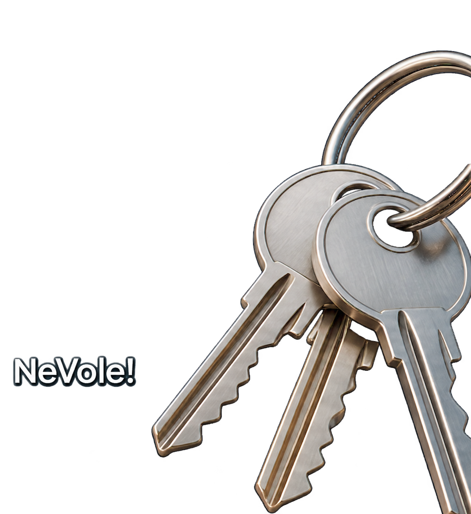

Letná proti 4:36
Letenská pláň, Praha 7 · hlavní shromáždění „Ruce pryč od médií!“
Informace pořadatele ↗Občané nejsou kompars.
Nechceme média vlády. Nechceme média opozice. Chceme Českou televizi a Český rozhlas, které mohou pracovat svobodně, odpovědně a bez politického nátlaku.

Dnes / Neděle 15. listopadu
Dnes jsou potvrzená dvě veřejná setkání k podpoře nezávislosti médií. Z dalších měst míří na hlavní demonstraci společné autobusy organizované místními dobrovolníky.
Letenská pláň, Praha 7 · hlavní shromáždění „Ruce pryč od médií!“
Informace pořadatele ↗Mírové náměstí · místní setkání s příchutí protestu.
Veřejná událost ↗Společné odjezdy
Kapacita autobusů se může měnit. Před cestou ověřte volné místo u místního organizátora v oficiální mapě.
Ověřeno ráno 15. listopadu 2026 podle veřejné mapy Milionu chvilek, veřejných událostí a regionálních zpráv. Nejde o úplný seznam spontánních setkání.
01 / Aktuální stav
Poslanecká sněmovna projednává návrh na zrušení televizních a rozhlasových poplatků a změnu financování České televize a Českého rozhlasu. Návrh prošel prvním čtením a výbor projednávání přerušil. Zákon není přijat a dosavadní poplatky zatím platí.
Poslanci návrh pustili do další fáze. Neznamená to schválení zákona.
Výbor pro média a kulturu návrh projednával a přerušil jednání.
Současný systém poplatků zůstává v platnosti. Konečná podoba nového financování není stanovena.
Ověřitelné dokumenty najdete v části Zdroje. Údaje jsou datovány a mohou se dále vyvíjet.
02 / Chronologie
Návrh financování veřejnoprávních médií prošel prvním čtením.
Garanční výbor se návrhem zabýval; jeho usnesení bylo poslancům doručeno 30. října.
Pracovníci obou médií protestovali proti navrženému modelu financování.
V Praze se uskutečnilo i shromáždění zastánců změn a zrušení poplatků.
Koalice dál prosazuje zrušení poplatků, ale konkrétní model náhradního financování zůstává otevřený.
Evropský parlament jednal o svobodě médií v Česku a nezávislosti médií veřejné služby.
Shromáždění na podporu nezávislosti médií právě probíhá na Letenské pláni v Praze.
Ohlášená odborná debata o změně financování.
Uváděný termín dalšího výborového projednávání; může se změnit.
Nejde o potvrzený den hlasování ani přijetí zákona.
03 / Peníze a odpovědnost
Koalice chce odstranit přímé televizní a rozhlasové poplatky. Přitom stále hledá konkrétní způsob náhradního financování. Samotným zrušením poplatků náklady na provoz médií nezmizí.
Domácnosti by přestaly platit samostatný poplatek. Vládní představitelé uvádějí, že nechtějí zvyšovat daně.
Odkud přesně přijdou peníze, podle jakého pravidla se budou přidělovat a kdo zajistí jejich dlouhodobou předvídatelnost.
Poplatek může zmizet z účtu domácnosti. Finanční zátěž společnosti tím ale automaticky nezmizí.
Financování ze státního rozpočtu lze krýt z již vybraných daní, na úkor jiných výdajů nebo případně zadlužením. Nová „skrytá daň“ není prokázaným plánem vlády. Je však namístě chtít přesná čísla a vysvětlení dopadů na veřejné rozpočty.
04 / Argumenty a rizika
Diskuse o reformě je legitimní. Nestačí ale slibovat jednodušší financování; důležité jsou veřejně dostupné výpočty, předvídatelná pravidla a ochrana před politickým tlakem.
Rozhodující není jen to, odkud peníze přicházejí. Rozhodující je, zda způsob jejich rozdělování chrání nezávislost médií.
05 / Evropský rozměr
Evropská komise situaci sleduje a 11. listopadu proběhla o českých veřejnoprávních médiích rozprava v Evropském parlamentu. Evropský akt o svobodě médií (EMFA) stanoví záruky redakční nezávislosti a dostatečného, předvídatelného financování médií veřejné služby.
Redakční nezávislost, transparentní zajištění veřejné služby a pravidla jejího financování.
Evropské právo nepřikazuje jediný model financování. Rozprava v Parlamentu sama o sobě není rozhodnutím o porušení evropských předpisů.
06 / Otázky veřejnosti
Jaký konkrétní a dlouhodobý zdroj nahradí poplatky?
Podle předem daného pravidla, nebo každoroční politické dohody?
Jak se zabrání využívání finančních rozhodnutí k nátlaku?
Bude to reálná úspora, nebo přesun výdajů jinam?
07 / Naše prohlášení
Česká televize a Český rozhlas nejsou kořistí vítězů voleb ani hlásnou troubou jedné strany. Jsou to média veřejné služby. Platíme je proto, aby ověřovala fakta, dávala prostor různým názorům a hlídala moc — dnešní i zítřejší.
Neříkáme, že každý omyl je zločin. Neoznačujeme nikoho za viníka bez důkazů. Žádáme však, aby zásadní změny, personální kroky i nakládání s veřejnými penězi byly vysvětlitelné, kontrolovatelné a v souladu se zákonem.
Když máme pochybnost, máme právo se ptát. Když vidíme konkrétní problém, máme právo požádat příslušnou instituci, aby jej prověřila.
Klidně. Věcně. Bez nálepek a bez strachu.
08 / Jednoduše vysvětleno
Ne. Návrh zatím není přijatým zákonem a současné poplatky zůstávají v platnosti.
Ne. Záleží na konkrétních zárukách nezávislosti, transparentnosti a předvídatelném zajištění prostředků.
Ne nutně. Domácnosti by přestaly platit samostatný poplatek, ale náklady na média bude stále třeba uhradit z jiných veřejných zdrojů.
Ne. Evropské instituce situaci projednávají a sledují. Samotná rozprava není právním verdiktem.
NeVOLE je nezávislý občanský informační projekt. Nepodporuje konkrétní politickou stranu a představuje své postoje odděleně od ověřitelných faktů.
09 / Ověřitelné zdroje
Odkazy vedou na původní úřední dokumenty a veřejně dostupné materiály. Informace jsou zde zachyceny ke dni 15. listopadu 2026. Pozdější vývoj je nutné ověřit znovu.
Projekt rozlišuje potvrzené události, plánované termíny, názory a možná rizika. Nenahrazuje právní poradenství.